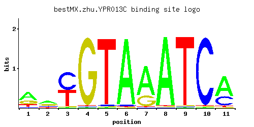

← All factors / TF RECORD
YPR013C
No recorded aliases
Function unknown
01 / RECOMMENDED MATRIX
Best-performing DNA-binding model.

Fisher’s P-valueNo data
Information content12.94
Max PWM score11.2
Recommended cutoff8.39
View and copy the recommended matrices ↘
Position frequency matrix (PFM)
A | 0.55 0.44 0.01 0.01 0.01 0.96 0.71 0.97 0.01 0.01 0.64 C | 0.08 0.21 0.52 0.01 0.02 0.02 0.01 0.01 0.01 0.97 0.30 G | 0.24 0.23 0.01 0.97 0.01 0.01 0.27 0.01 0.01 0.01 0.02 T | 0.13 0.12 0.45 0.01 0.96 0.01 0.01 0.01 0.97 0.01 0.04
Position count matrix (PCM)
A | 55 44 1 1 1 96 71 97 1 1 64 C | 8 21 52 1 2 2 1 1 1 97 30 G | 24 23 1 97 1 1 27 1 1 1 2 T | 13 12 45 1 96 1 1 1 97 1 4
Position weight matrix (PWM)
A | 0.54 0.32 -3.47 -3.47 -3.47 1.10 0.80 1.11 -3.47 -3.47 0.69 C | -0.81 0.15 1.06 -2.89 -2.20 -2.20 -2.89 -2.89 -2.89 1.68 0.51 G | 0.29 0.25 -2.89 1.68 -2.89 -2.89 0.41 -2.89 -2.89 -2.89 -2.20 T | -0.90 -0.98 0.34 -3.47 1.10 -3.47 -3.47 -3.47 1.11 -3.47 -2.08
02 / COMPARATIVE BENCHMARKS
Alternative candidate matrices 2
Historical matrix candidates from the original ScerTF database. Expand a source to inspect its original logo, scores, and matrix values.
YPR013CBadis et. al.P = No dataView matrix ↘
YPR013CZhao and StormoP = No dataView matrix ↘
03 / EXPERIMENTAL CONTEXT
Gene-level annotations and interactions.
Genes bound in ChIP-chip experiments 1 genes
No Data
Genes affected by TF deletion 1 genes
No Data
Genes supported by both experiments 1 genes
No Data